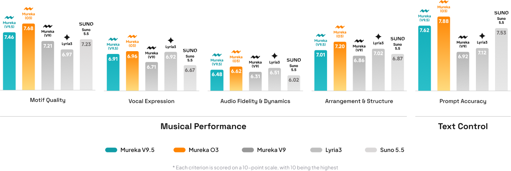

The short answer
Mureka O3 was the strongest overall model in this evaluation. It earned the highest score in every measured category and achieved a calculated average of 7.27 out of 10. Mureka V9.5 placed second overall at 7.10, while Lyra3, Suno 5.5, and Mureka V9 formed a closely matched middle group.
Key findings
- Mureka O3 led all five categories, including prompt accuracy at 7.88.
- Mureka V9.5 was the second-best overall option and remained competitive across every criterion.
- Suno 5.5 performed strongly in motif quality and prompt accuracy but scored lower in audio fidelity and dynamics.
- Lyra3 showed balanced vocal expression and arrangement scores.
- The differences are meaningful for comparison, but no single score can predict the best model for every song or creator.
How we evaluated the models
This Mureka internal benchmark compares the five model versions shown in the published evaluation chart: Mureka O3, Mureka V9.5, Mureka V9, Lyra3, and Suno 5.5. Each criterion is reported on a 10-point scale, where 10 represents the highest performance.
Evaluation criteria
- Motif quality: how memorable, coherent, and musically useful the core melodic ideas are.
- Vocal expression: phrasing, emotion, articulation, and the naturalness of the generated performance.
- Audio fidelity and dynamics: clarity, balance, impact, and preservation of musical detail.
- Arrangement and structure: how well sections develop, transition, and form a complete song.
- Prompt accuracy: how closely the result follows requested genre, mood, instrumentation, and creative direction.
Benchmark results

| Model | Motif | Vocal | Fidelity | Arrangement | Prompt | Average |
|---|---|---|---|---|---|---|
| Mureka O3 | 7.68 | 6.96 | 6.62 | 7.20 | 7.88 | 7.27 |
| Mureka V9.5 | 7.46 | 6.91 | 6.48 | 7.01 | 7.62 | 7.10 |
| Lyra3 | 6.97 | 6.92 | 6.51 | 7.02 | 7.12 | 6.91 |
| Suno 5.5 | 7.23 | 6.67 | 6.02 | 6.87 | 7.53 | 6.86 |
| Mureka V9 | 7.21 | 6.71 | 6.31 | 6.86 | 6.92 | 6.80 |
The average column is the arithmetic mean of the five published category scores. It is included as a concise summary, not as an additional judged metric.
Overall ranking
- Mureka O3Best overall result in this benchmark, with category-leading scores across musical and instruction-following criteria.7.27
- Mureka V9.5A balanced option with especially strong motif quality and prompt accuracy.7.10
- Lyra3Competitive vocal expression, fidelity, and arrangement performance.6.91
- Suno 5.5Strong prompt accuracy and motif quality, with lower measured fidelity and dynamics in this round.6.86
- Mureka V9A solid baseline that trails the newer Mureka models across all five measured dimensions.6.80
Which AI music generator should you choose?
Choose Mureka O3 for the strongest overall measured performance
O3 is the clearest choice from this dataset when you want one model that performs consistently across composition, vocals, production, arrangement, and prompt following. Its largest advantage appears in prompt accuracy, which matters when a project has a specific genre, instrumentation, or emotional brief.
Choose Mureka V9.5 for a balanced creative workflow
V9.5 stays close to O3 in motif quality and prompt accuracy. It is a practical choice for creators who value coherent ideas and reliable interpretation of text instructions.
Consider Suno 5.5 when motifs and prompt interpretation matter most
Suno 5.5 achieved a 7.23 in motif quality and 7.53 in prompt accuracy. In this benchmark, however, it scored 6.02 for audio fidelity and dynamics, the lowest result in that category.
Consider Lyra3 for balanced vocals and arrangement
Lyra3 recorded the second-highest vocal expression score and the second-highest arrangement score. Its profile is relatively even, without a single category dominating the result.
What this comparison does not prove
Benchmark scores are useful, but they do not replace listening tests for your own use case. A model that performs well on average may still be less suitable for a specific genre, language, vocal style, or production workflow.
Frequently asked questions
What is the best AI music generator in this test?
Mureka O3 ranked first, leading all five measured categories and achieving a calculated average of 7.27 out of 10.
Which model followed prompts most accurately?
Mureka O3 scored 7.88 for prompt accuracy, followed by Mureka V9.5 at 7.62 and Suno 5.5 at 7.53.
Which model produced the best motifs?
Mureka O3 received the highest motif quality score at 7.68. Mureka V9.5 followed at 7.46, with Suno 5.5 at 7.23.
Does this comparison include every AI music generator?
No. It only compares the five models included in this evaluation. Future tests should expand the model set and publish more detail about prompts, samples, listeners, and statistical confidence.
Turn your next idea into music
Describe the song you want, refine the result, and continue editing it in Mureka.
Create music with Mureka